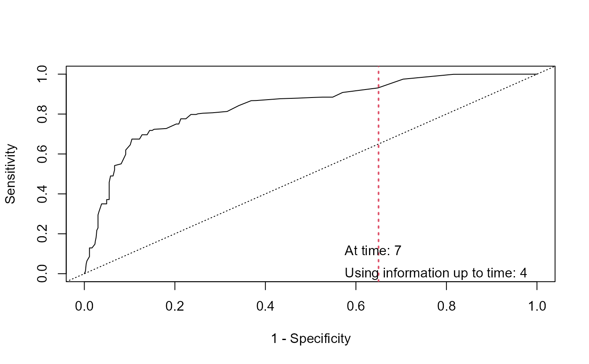

Time-Dependent Predictive Accuracy Measures for Joint Models
accuracy.RdUsing the available longitudinal information up to a starting time point, these functions compute estimates of the ROC curve and the AUC, the Brier score and expected predictive cross-entropy at a horizon time point based on joint models.
Usage
tvROC(object, newdata, Tstart, ...)
# S3 method for class 'jm'
tvROC(object, newdata, Tstart, Thoriz = NULL,
Dt = NULL, type_weights = c("model-based", "IPCW"), ...)
tvAUC(object, newdata, Tstart, ...)
# S3 method for class 'jm'
tvAUC(object, newdata, Tstart, Thoriz = NULL,
Dt = NULL, type_weights = c("model-based", "IPCW"), ...)
# S3 method for class 'tvROC'
tvAUC(object, ...)
calibration_plot(object, newdata, Tstart, ...)
# S3 method for class 'jm'
calibration_plot(object, newdata, Tstart, Thoriz = NULL,
Dt = NULL, df_ns = NULL, plot = TRUE,
col = "red", lty = 1, lwd = 1,
add_CI = TRUE, col_CI = "lightgrey",
add_density = TRUE, col_dens = "grey",
xlab = "Predicted Probabilities",
ylab = "Observed Probabilities", main = "", ...)
calibration_metrics(object, newdata, Tstart, Thoriz = NULL,
Dt = NULL, df_ns = NULL, ...)
tvBrier(object, newdata, Tstart, ...)
# S3 method for class 'jm'
tvBrier(object, newdata, Tstart, Thoriz = NULL, Dt = NULL,
integrated = FALSE, type_weights = c("model-based", "IPCW"),
model_weights = NULL, eventData_fun = NULL,
parallel = c("snow", "multicore"),
cores = parallelly::availableCores(omit = 1L), ...)
tvEPCE(object, newdata, Tstart, Thoriz = NULL, Dt = NULL, eps = 0.001,
model_weights = NULL, eventData_fun = NULL,
parallel = c("snow", "multicore"),
cores = parallelly::availableCores(omit = 1L), ...)
create_folds(data, V = 5, id_var = "id",
method = c("CV", "Bootstrap"), strata = NULL, seed = 123L)Arguments
- object
an object inheriting from class
jm, except fortvAUC.tvROC()where this is an object of classtvROC. FortvBrier()andtvEPCE()it can also be a library of joint models.- newdata
a data.frame that contains the longitudinal and covariate information for the subjects for which prediction of survival probabilities is required. The names of the variables in this data.frame must be the same as in the data.frames that were used to fit the linear mixed effects and the event process model that were supplied as the two first argument of
jm.- Tstart
numeric scalar denoting the time point up to which longitudinal information is to be used to derive predictions.
- Thoriz
numeric scalar denoting the time point for which a prediction of the survival status is of interest;
Thorizmust be later thanTstartand eitherDtorThorizmust be specified. IfThorizisNULLis set equal toTstart + Dt.- Dt
numeric scalar denoting the length of the time interval of prediction; either
DtorThorizmust be specified.- integrated
logical; if
TRUEthe integrated Brier score is calculated.- type_weights
character string denoting the type of weights to use to account for censorting. Options are model-based (default) and inverse probability of censoring weighting (using the Kaplan-Meier estimate of the censoring distribution).
- eps
numeric scalar used in the approximation of the hazard function.
- model_weights
a numeric vector of weights to combine predictions when
objectis a list of joint models of class"jmList".- eventData_fun
a function that takes as input the
newdataand produces the dataset used for the event process model. This is useful when, for example, the event process model contains other time-varying covariates. It is important that this function does not alter the ordering of the subjects innewdata.- parallel
character string; what type of parallel computing to use.
- cores
integer denoting the number of cores to be used when a library of joint models has been provided in
object. Ifcores = 1, no parallel computing is used.- df_ns
the degrees of freedom for the natural cubic spline of the cloglog transformation of the predicted probabilities used in the Cox model that assesses calibration. The default is 3 unless there are less than 25 events in the interval (
Tstart,Thoriz] in which case it is 2.- plot
logical; should a plot be produced. If
FALSE, a list is returned with the observed and predicted probabilities.- add_CI
logical; should 0.95 pointwise confidence intervals be added around the calibration line.
- col_CI
character; the color of the shaded area representing the 0.95 pointwise confidence intervals around the calibration line.
- add_density
logical; should the kernal density estimation of the predicted probabilities be superimposed in the calibration plot.
- col, lwd, lty, col_dens, xlab, ylab, main
graphical parameters.
- data
the data.frame to split in folds.
- V
numeric scalar denoting the number of folds for cross-validation or the number of sample for the Bootstrap methods.
- id_var
character string denoting the name of the subject id variable in
data.- strata
character vector with the names of stratifying variables.
- method
character string indicating which method to use to create the training and testing datasets in
create_folds(). The default is V-fold cross-validation. For theBootstrapoption,Vsamples with replacement from the original dataset are proruced as training data. The testing data contains the subjects that were not selected in the respective Bootstrap sample.- seed
integer denoting the seed.
- ...
additional arguments passed to
predict.jm().
Value
A list of class tvAUC with components:
- auc
a numeric scalar denoting the estimated prediction error.
- Tstart
a copy of the
Tstartargument.- Thoriz
a copy of the
Thorizargument.- nr
a numeric scalar denoting the number of subjects at risk at time
Tstart.- classObject
the class of
object.- nameObject
the name of
object.
A list of class tvROC with components:
- TP, FP, nTP, nFN, nTN, qSN, qSP, qOverall
accuracy indexes.
- F1score, Youden
numeric scalars with the optimal cut-point using the F1 score and the Youden index.
- thr
numeric vector of thresholds.
- Tstart
a copy of the
Tstartargument.- Thoriz
a copy of the
Thorizargument.- nr
a numeric scalar denoting the number of subjects at risk at time
Tstart.- classObject
the class of
object.- nameObject
the name of
object.
References
Antolini, L., Boracchi, P., and Biganzoli, E. (2005). A time-dependent discrimination index for survival data. Statistics in Medicine 24, 3927–3944.
Commenges, D., Liquet, B., and Proust-Lima, C. (2012). Choice of prognostic estimators in joint models by estimating differences of expected conditional Kullback-Leibler risks. Biometrics 68, 380–387.
Harrell, F., Kerry, L. and Mark, D. (1996). Multivariable prognostic models: issues in developing models, evaluating assumptions and adequacy, and measuring and reducing errors. Statistics in Medicine 15, 361–387.
Heagerty, P. and Zheng, Y. (2005). Survival model predictive accuracy and ROC curves. Biometrics 61, 92–105.
Rizopoulos, D. (2016). The R package JMbayes for fitting joint models for longitudinal and time-to-event data using MCMC. Journal of Statistical Software 72(7), 1–45. doi:10.18637/jss.v072.i07.
Rizopoulos, D. (2012) Joint Models for Longitudinal and Time-to-Event Data: with Applications in R. Boca Raton: Chapman and Hall/CRC.
Rizopoulos, D. (2011). Dynamic predictions and prospective accuracy in joint models for longitudinal and time-to-event data. Biometrics 67, 819–829.
Rizopoulos, D., Molenberghs, G. and Lesaffre, E.M.E.H. (2017). Dynamic predictions with time-dependent covariates in survival analysis using joint modeling and landmarking. Biometrical Journal 59, 1261–1276.
Author
Dimitris Rizopoulos d.rizopoulos@erasmusmc.nl
Examples
# \donttest{
# We fit a multivariate joint model
pbc2.id$status2 <- as.numeric(pbc2.id$status != 'alive')
CoxFit <- coxph(Surv(years, status2) ~ sex, data = pbc2.id)
fm1 <- lme(log(serBilir) ~ ns(year, 3) * sex, data = pbc2,
random = ~ ns(year, 3) | id, control = lmeControl(opt = 'optim'))
fm2 <- lme(prothrombin ~ ns(year, 2) * sex, data = pbc2,
random = ~ ns(year, 2) | id, control = lmeControl(opt = 'optim'))
fm3 <- mixed_model(ascites ~ year * sex, data = pbc2,
random = ~ year | id, family = binomial())
jointFit <- jm(CoxFit, list(fm1, fm2, fm3), time_var = "year", n_chains = 1L)
roc <- tvROC(jointFit, newdata = pbc2, Tstart = 4, Dt = 3, cores = 1L)
roc
#>
#> Time-dependent Sensitivity and Specificity for the Joint Model jointFit
#>
#> At time: 7
#> Using information up to time: 4 (225 subjects still at risk)
#> Accounting for censoring using model-based weights
#>
#> cut-off SN SP
#> 1 0.00 0.00000 1.0000
#> 2 0.02 0.01235 0.9976
#> 3 0.03 0.04917 0.9959
#> 4 0.07 0.06430 0.9943
#> 5 0.09 0.08593 0.9887
#> 6 0.10 0.10755 0.9887
#> 7 0.12 0.12917 0.9887
#> 8 0.13 0.12917 0.9831
#> 9 0.14 0.14777 0.9767
#> 10 0.18 0.16506 0.9756
#> 11 0.19 0.18082 0.9741
#> 12 0.20 0.21773 0.9724
#> 13 0.21 0.22934 0.9698
#> 14 0.22 0.27258 0.9698
#> 15 0.23 0.29420 0.9698
#> 16 0.24 0.30876 0.9680
#> 17 0.26 0.34993 0.9619
#> 18 0.29 0.34993 0.9507
#> 19 0.30 0.37155 0.9507
#> 20 0.33 0.37155 0.9451
#> 21 0.37 0.41480 0.9451
#> 22 0.40 0.43642 0.9451
#> 23 0.41 0.45804 0.9451
#> 24 0.45 0.48986 0.9421
#> 25 0.46 0.48986 0.9365
#> 26 0.49 0.52023 0.9332
#> 27 0.50 0.54185 0.9332
#> 28 0.51 0.55051 0.9187
#> 29 0.53 0.59811 0.9086
#> 30 0.56 0.61973 0.9086
#> 31 0.57 0.64583 0.8986
#> 32 0.59 0.67473 0.8949
#> 33 0.60 0.67473 0.8781
#> 34 0.61 0.69635 0.8725
#> 35 0.62 0.69635 0.8669
#> 36 0.63 0.69635 0.8613
#> 37 0.65 0.71797 0.8557
#> 38 0.68 0.71797 0.8501
#> 39 0.70 0.72362 0.8460
#> 40 0.72 0.72753 0.8190
#> 41 0.73 0.75023 0.7969
#> 42 0.74 0.75023 0.7913
#> 43 0.75 0.77633 0.7869
#> 44 0.77 0.77633 0.7757
#> 45 0.78 0.79795 0.7645
#> 46 0.79 0.79795 0.7589
#> 47 0.80 0.79795 0.7533
#> 48 0.82 0.80152 0.7486
#> 49 0.83 0.80414 0.7381
#> 50 0.84 0.80656 0.7164
#> 51 0.85 0.81303 0.6845
#> 52 0.86 0.84261 0.6586
#> 53 0.87 0.86714 0.6314
#> 54 0.88 0.86778 0.6203
#> 55 0.89 0.87695 0.5668
#> 56 0.90 0.87979 0.5283
#> 57 0.91 0.88315 0.4956
#> 58 0.92 0.88481 0.4737
#> 59 0.93 0.88481 0.4513
#> 60 0.94 0.90824 0.4294
#> 61 0.95 0.93099 0.3514
#> 62 0.96 0.97502 0.2956
#> 63 0.97 0.99923 0.1844
#> 64 0.98 0.99973 0.1174
#> 65 0.99 1.00000 0.0000
#>
tvAUC(roc)
#>
#> Time-dependent AUC for the Joint Model jointFit
#>
#> Estimated AUC: 0.8412
#> At time: 7
#> Using information up to time: 4 (225 subjects still at risk)
#> Accounting for censoring using model-based weights
#>
plot(roc, legend = TRUE, optimal_cutoff = "Youden")

# }